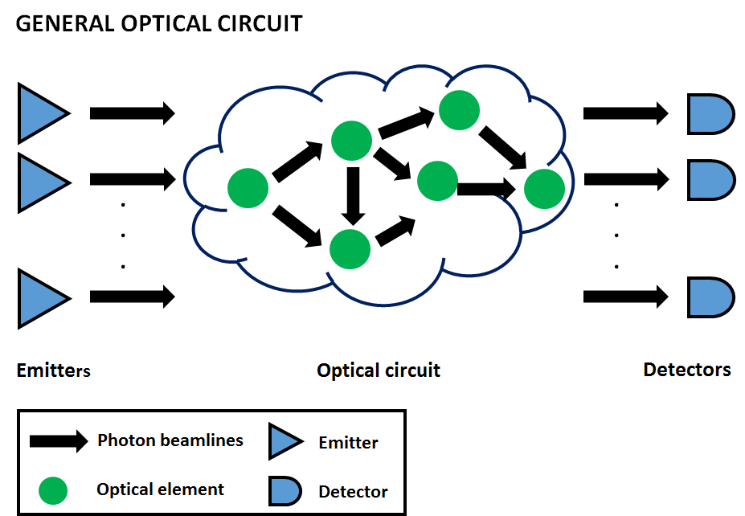

SOQCS
Stochastic Optical Quantum Circuit Simulator (SOQCS) is a C++ and Python library which offers a framework to define, simulate and study quantum linear optical circuits in presence of various imperfections typically encountered in experiments. Optical circuits are defined from non-ideal basic components connected by a lossy medium. The library also provides support for non-ideal emitters and physical detectors considering detection efficiency, dead time, dark counts and noise effects. Detectors can also be configured to establish post-selection conditions on the circuit. Circuit measurements provide detection statistics in the form of probability outcomes and density matrices.
SOQCS features:
- Building of circuits from non-ideal physical devices that may contain losses.
- Connecting the circuit elements through lossy media
- Creating sets of partially distinguishable photons from their physical parameters (this is shape, frequency, width, etc)
- Simulate the output of the circuit using different core methods.
- Perform detection using a model of physical detectors that considers effects of efficiency, dead time, dark counts and noise.
- Establish post-selection conditions in the detector configuration.
- Basic boson sampling support.
- A Python port.
Related publications
Please cite the most appropriate of these works if you make use of this library:
Javier Osca and Jiri Vala. Stochastic Optical Quantum Circuit Simulator ( SOQCS ) .
SoftwareX. Volume 25, 101603 (2024).
Javier Osca and Jiri Vala. Implementation of photon partial distinguishability in a quantum optical circuit simulation.
Comput. Phys. Commun. Volume 289, 108773 (2023).

Circuit elements catalog
This section is a brief summary of the catalog of optical circuit elements available in SOQCS. We refer to the documentation of each one of them for details. This list is not exhaustive therefore we also refer the user to the circuit or device classes documentation in the modules section for more information.
- Basic elements:
- beamsplitter(int i_ch1, int i_ch2, double theta, double phi): Adds an ideal beamsplitter to the circuit.
- phase_shifter(int i_ch, double phi): Adds a phase shifter to the circuit.
- delay(ch,dt) : Adds a delay in a channel.
- rewire(int i_ch1, int ch2): Swaps to channels.
- dielectric(int i_ch1, int i_ch2, cmplx t, cmplx r): Adds a physical dielectric beamsplitter.
- loss(int i_ch, double l): Adds a lossy medium.
- MMI2(int i_ch1, int ch2): Adds a 2x2 ideal MMI beamsplitter.
- NSX(int i_ch1, int i_ch2, int i_ch3): Adds a built-in NSX circuit (Post-selection has to be configured with the detectors).
- random_circuit(): Adds a random circuit.
- Polarization elements:
- rotator(int i_ch, double d_theta, double d_phi): Adds a rotator to the circuit.
- pol_beamsplitter(int i_ch1, int i_ch2, int P): Adds a polarizing beamsplitter.
- pol_phase_shifter(int i_ch, int P, double phi): Adds a polarized phase shifter.
- pol_filter(int i_ch, int P): Adds a filter that removes polarization P.
- half(int i_ch, int P, double alplha, double gamma): Adds a half-waveplate.
- quarter(int i_ch, int P, double alplha, double gamma): Adds a quarter-waveplate.
- Detection elements:
- ignore(int i_ch): Ignores a channel and removes it from the output.
- detector(int i_ch): Adds a detector.
- detector(int i_ch, int cond): Adds a conditional detection.
- detector(int i_ch, int cond, double eff, double blnk, double gamma): Adds a general physical detector.
- noise(double stdev2): Adds noise to the output.
Simulator cores
The simulator can be configured to use four different cores for exact calculation:
- Direct: The calculation is performed similarly on how it is done analytically. This method is recommended when the number of photons <=4.
- Glynn: We use the Balasubramanian/Bax/Franklin/Glynn formula implemented in gray code to calculate the permanent [1]. This method is recommended when the number of photons >=4 and <=15 .
- Ryser: We use the Ryser formula [2] to calculate the permanent using parallelization in the ways described in ref [3]. This method is recommended when the number of photons >=7.
- Fast Ryser: Same as the Ryser method but automatically restricting the output distribution to the non-zero contributions after post-selection.
It is also possible to call the simulator in a manual mode where only the amplitudes of a pre-determined list of kets are calculated if this list is provided to the simulator.
The simulator can also be used for sampling with two possible methods:
- Clifford A: [4]
- Metropolis*:[5]
[1] D. G. Glynn, The permanent of a square matrix, European Journal of Combinatorics 31 (7) (2010) 1887?1891
[2] H. J. Ryser, Combinatorial mathematics. Volume14. American Mathematical Society. (1963).
[3] P. Lundow, K. Markström, Efficient computation of permanents, with applications to boson sampling and random matrices, Journal of Computational Physics 455 (2022) 110990.
[4] Peter Clifford and Raphael Clifford. The Classical Complexity of Boson Sampling, Proceedings of the 2018 Annual ACM-SIAM Symposium on Discrete Algorithms (SODA). Page 146-155. SIAM Publications Library (2018).
[5] Alex Neville et Al. Classical boson sampling algorithms with superior performance to near-term experiments, Nature Physics 13, 1153-1157 (2017)